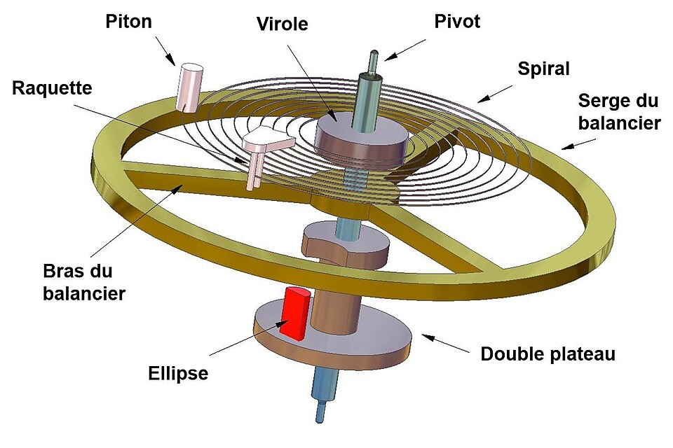
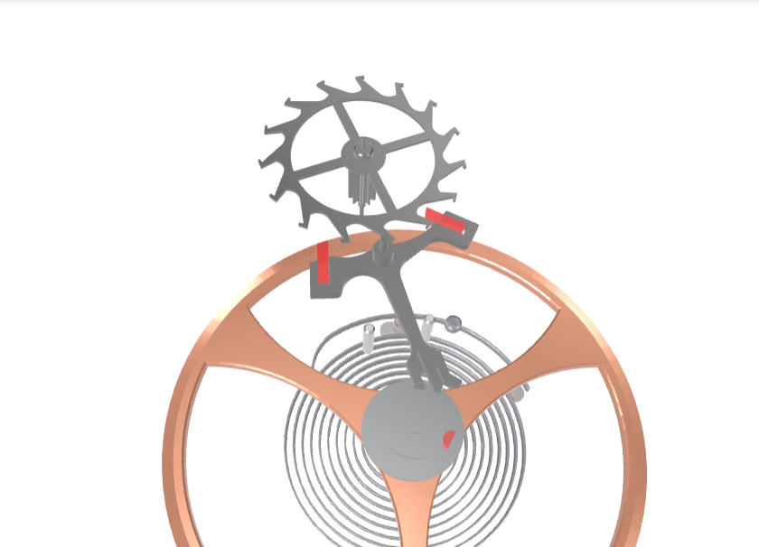
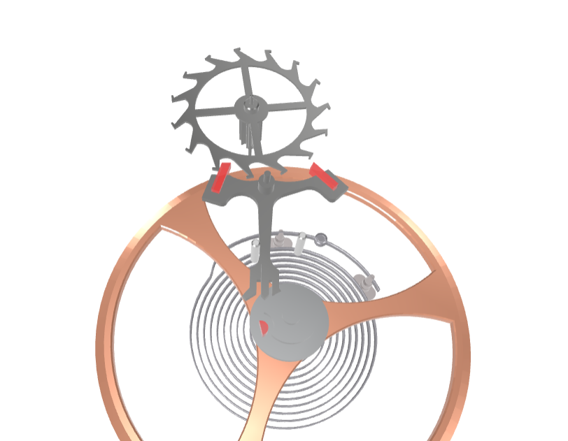
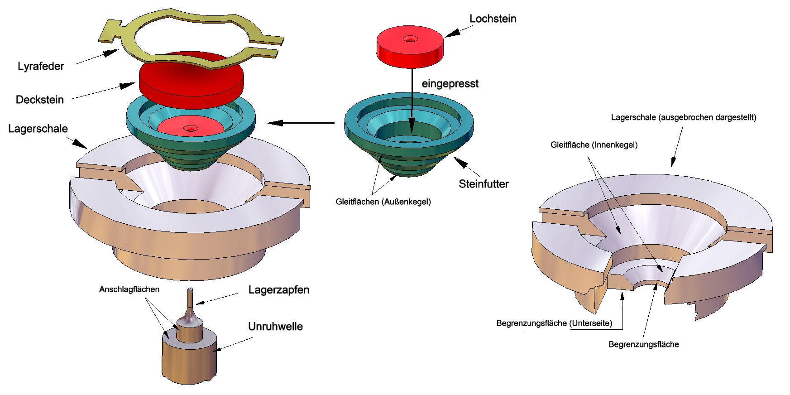
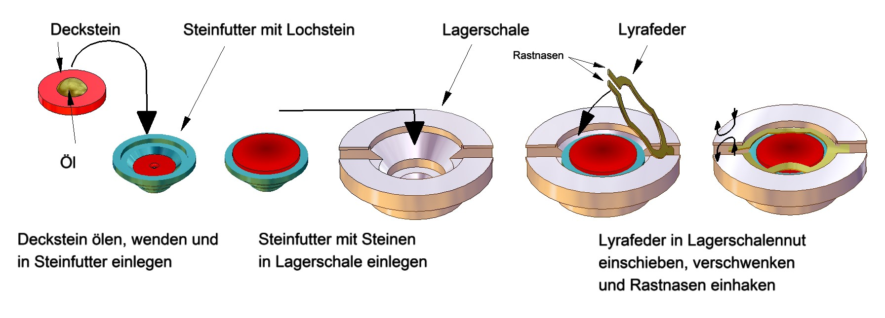
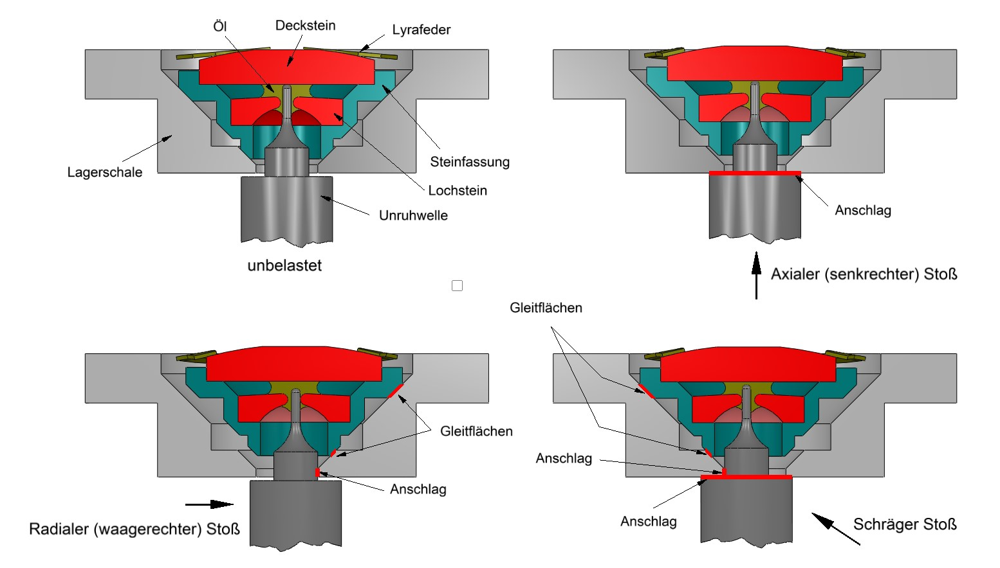

Composants Clés : Roue d'échappement, Ancre suisse avec rubis, Double plateau avec ellipse.
Fonction : Transformer la rotation en oscillations et distribuer l'énergie.
Modèle 3D interactif : faites glisser pour pivoter. | Modèle 3D : C. Yamahata (Sketchfab)
📷 FEUILLET MANUSCRIT ORIGINAL (01-07) — Échappement à Ancre Suisse
7B. Approfondissement Technique : Anatomie Fonctionnelle de l'Organe Réglant
L'organe réglant est le cœur isochrone de la montre mécanique. Il assure le découpage rigoureux du temps par ses oscillations régulières. La maîtrise de ses sous-ensembles (liaisons, guidages et impulsion) est indispensable pour comprendre la chronométrie.

📷 TAVOLA TECNICA D'ATELIER — Anatomie fonctionnelle de l'organe réglant et de l'ensemble balancier-spiral.
Description détaillée des composants clés de l'ensemble balancier-spiral :
1° Le Piton : C'est la cheville d'ancrage fixe qui immobilise l'extrémité extérieure du spiral sur le pont de balancier.
2° La Virole : Petit anneau métallique central serti sur l'axe du balancier, fixant l'extrémité intérieure du spiral.
3° Le Pivot : L'extrémité extrêmement fine et polie de l'axe du balancier tournant dans des rubis.
4° Le Spiral : Ressort élastique fournissant le couple de rappel permanent.
5° La Serge du Balancier : L'anneau circulaire périphérique dont la masse détermine le moment d'inertie.
6° Les Bras du Balancier : Rayons de liaison rigides reliant le moyeu à la serge.
7° La Raquette : Organe de réglage mobile modifiant la longueur active de la spirale.
8° Le Double Plateau : Supportant l'encoche de sécurité et l'ellipse d'impulsion.
9° L'Ellipse : Cylindre en rubis recevant et transmettant l'impulsion entre l'ancre et le balancier.
7C. L'Inertie du Balancier et le Secret du "Tic-Tac"
1. Comprendre l'Inertie au Banc d'Atelier
Lorsqu'on manipule un balancier, on perçoit immédiatement sa résistance à changer de vitesse : c'est l'inertie.
Pour un horloger, l'inertie (I = m · R²) signifie que la masse du balancier ne doit pas seulement être lourde, elle doit surtout être répartie le plus loin possible du centre (sur la serge).
Un balancier doté d'une bonne inertie se comporte comme un volant stabilisateur : il est moins vulnérable aux micro-chocs du poignet ou aux soubresauts du train de rouage.
2. Anatomie d'un Battement : D'où vient le "Tic-Tac" ?
Ce son caractéristique, que l'on écoute au chronocomparateur, n'est pas un bruit unique, mais la somme de deux événements mécaniques ultra-rapides générés à chaque alternance :

1. LE "TIC" (Impact d'entrée)
Verrouillage de la roue sur la lévée d'entrée.

2. LE "TAC" (Impact de sortie)
Verrouillage symétrique sur la lévée de sortie.
* Le "Tic" (Premier impact) : Se produit lorsque la dent de la roue d'échappement vient s'appuyer et se verrouiller sur la lévée d'entrée de l'ancre.
* Le "Tac" (Second impact) : Correspond au verrouillage symétrique sur la lévée de sortie de l'autre côté du cycle.
Entre ces deux sons, l'ellipse traverse la fourchette dans un silence absolu. Écouter le tic-tac, c'est écouter la "respiration" de la montre : un rythme régulier confirme un bon repérage au banc !
3. L'Harmonie de l'Oscillation : La Formule Démystifiée
La période d'un balancier (T = 2π · √(I / C)) se comprend simplement comme une balance :
I représente le poids et sa distribution (l'inertie du balancier), tandis que C représente la force du ressort (la raideur du spiral).
Pour régler la montre, l'horloger agit soit sur la raquette (pour modifier la longueur active du spiral C), soit sur les masselottes du balancier (pour modifier l'inertie I).
8. Régulation : Le Balancier-Spiral & Fréquences d'Oscillation
Fréquence (Ah)
Type de Calibre
Exemple
(Hz)
Alternances/Sec
18'000 Ah
Historique / Poche
ETA 6497-1
2.5 Hz
5 tics/sec
21'600 Ah
Intermédiaire
ETA 6497-2
3.0 Hz
6 tics/sec
28'800 Ah
Standard moderne
ETA 2824-2
4.0 Hz
8 tics/sec
36'000 Ah
Haute Fréquence
Zenith El Primero
5.0 Hz
10 tics/sec
8A. Fréquence et Chronométrie : Comprendre les Hertz, les Alternances et leurs Enjeux
Dans le langage horloger, on jongle constamment entre les Alternances par heure (Ah), les Hertz (Hz) et le nombre de battements audibles. Faisons le point pour dissiper toute confusion :
Le Hertz (Hz) : Représente une oscillation complète (aller-retour) par seconde. 1 Hz = 1 cycle/seconde.
L'Alternance (semi-oscillation) : Chaque aller ou chaque retour du balancier libère un impact de l'échappement. Comme un cycle complet comprend un aller et un retour, 1 Hz produit exactement 2 alternances (un "tic" et un "tac").
Exemple concret : Un mouvement moderne standard oscillant à 4 Hz effectue 4 cycles par seconde, soit 8 alternances par seconde (4 × 2 = 8), ce qui donne 28'800 alternances par heure (8 × 3600 sec).
Avantages et Inconvénients : Le Choix de la Fréquence
Le choix de la fréquence d'un calibre n'est jamais le fruit du hasard ; il résulte d'un compromis technique pointu entre stabilité chronométrique, autonomie et usure mécanique :
📉 Basses Fréquences (ex: 18'000 Ah / 2.5 Hz) Avantages : Moins de frottements, usure réduite des mobiles et excellente réserve de marche (le train d'engrenages consomme moins d'énergie). Visuellement, l'oscillation lente du grand balancier est un spectacle magnifique en Haute Horlogerie traditionnelle. Inconvénients : Plus sensibles aux chocs et aux mouvements du poignet ; un micro-choc perturbe davantage la marche de la montre.
📈 Hautes Fréquences (ex: 36'000 Ah / 5 Hz) Avantages : Stabilité chronométrique exceptionnelle. Grâce à la vitesse et à l'inertie élevée, le balancier récupère sa position d'équilibre de manière fulgurante après une perturbation. Indispensable pour mesurer des fractions courtes de temps (chronographes haute précision). Inconvénients : Consommation d'énergie accrue (nécessite des ressorts-moteurs puissants), lubrification plus sollicitée et usure mécanique accélérée sans des matériaux modernes (silicium, traitements de surface).
📷 FEUILLET MANUSCRIT ORIGINAL (01-08) — Balancier-Spiral
📷 MISE EN ÉCHELLE — L'organe régulateur (pont, balancier et spiral) à côté d'une tête d'allumette, illustrant l'extrême miniaturisation de la micromécanique horlogère.
9. Anatomie du Balancier & Systèmes de Protection (Antichocs)
L'évolution majeure réside dans la protection des pivots (0.07mm) contre les chocs mécaniques.



Composants de Liaison : Virole, Piton, Raquette.
📷 FEUILLET MANUSCRIT ORIGINAL (01-09) — Composants du Balancier